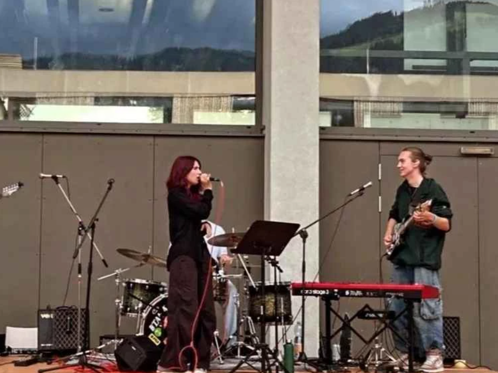

Die Entstehungsgeschichte der Ersatzbank (4/4)

Teil 4: Die Wiederauferstehung
Einige Monate später ergab sich jedoch erneut die Gelegenheit, einen Auftritt zu spielen.
Leider konnten erneut nicht alle Mitglieder von „Missing Max“ und „Upstream Station“ teilnehmen.
Daher kam die „Ersatzbank“ wieder ins Spiel. Dieses Mal bestand die Band aus Zoe (Gesang), Jonas (Gitarre, Keyboard),
Lorenz (Leadgitarre), Joshua (Bass) und Matteo (Schlagzeug), der durch Kontakte zu einigen Bandmitgliedern hinzukam.
Nach dieser Erfahrung waren alle überzeugt und zufrieden mit der Band.
Sie entschieden sich, dieses Projekt fortzuführen. Und so, liebe Kinder, ist die Geschichte der Entstehung der „Ersatzbank“.